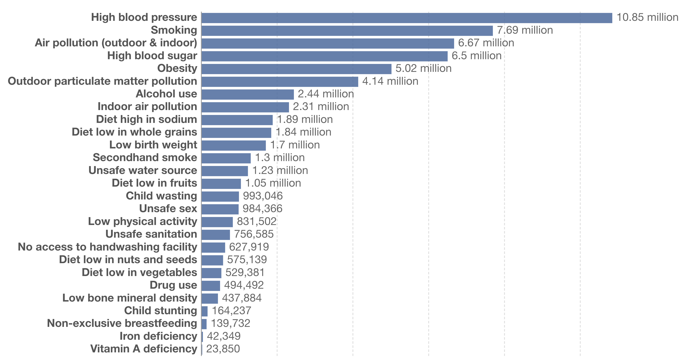

Air pollution

Air pollution is caused by a combination of gaseous and particulate pollutants such as carbon dioxide, methane, and nitrogen dioxide emitted from point sources such as factories and motor vehicles that burn fuel. Some gaseous emissions are visible to the eye and sometimes may even diffuse into the atmosphere and become invisible. Particulate pollution, on the other hand, such as soot and black carbon, is always visible.
Air pollution is one of the world’s leading risk factors for death
Air pollution is responsible for millions of deaths each year Air pollution – the combination of outdoor and indoor particulate matter, and ozone – is a risk factor for many of the leading causes of death including heart disease, stroke, lower respiratory infections, lung cancer, diabetes and chronic obstructive pulmonary disease (COPD). The Institute for Health Metrics and Evaluation (IHME) in its Global Burden of Disease study provide estimates of the number of deaths attributed to the range of risk factors for disease.1 In the visualization we see the number of deaths per year attributed to each risk factor. This chart is shown for the global total, but can be explored for any country or region using the “change country” toggle. Air pollution is one of the leading risk factors for death. In low-income countries, it is often very near the top of the list (or is the leading risk factor).